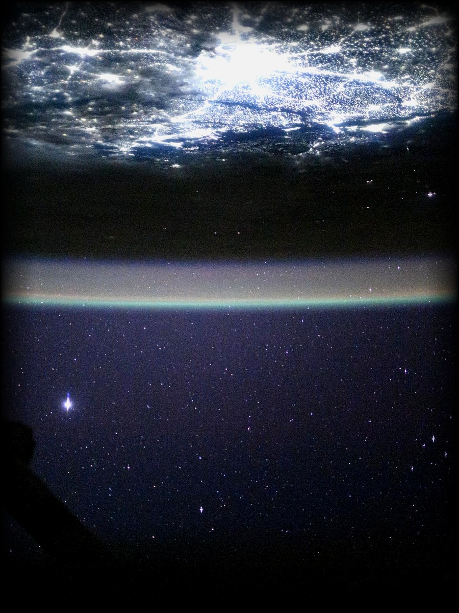
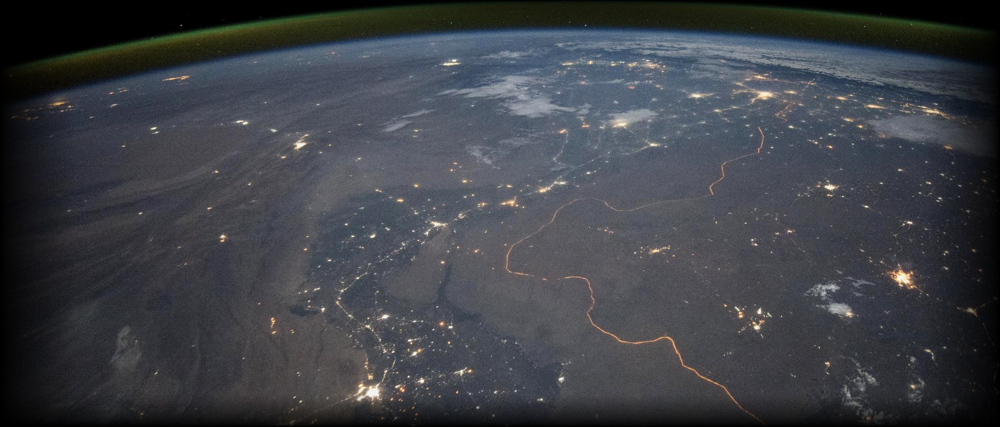

Making environmental change visible through maps, data, and science.
Signal Earth uncovers environmental change through maps, satellite imagery, official regulatory data, and scientific research—transforming complex planetary evidence into insights anyone can understand.
Featured Airshed Investigations
Explore our dedicated interactive investigation interfaces. Each investigation features continuous station telemetry, satellite remote sensing, and reproducible scientific workflows.
Continuous Multi-Year CPCB Telemetry & Predictive Machine Learning
Dissecting seven years of continuous ambient telemetry at Delhi's northern gateway. Analyzes winter radiation inversions, transboundary agricultural smoke plumes, and prospective 24-hour Random Forest predictive AI (R² = 0.77).
Spatial Particulate Trends, Seasonal Spikes & Weather Correlation
Dual-station investigation across NSI Kalyanpur and Nehru Nagar using continuous CPCB/UPPCB telemetry via OpenAQ. Dissects a 5× November winter surge over August monsoon baseline, nocturnal boundary layer collapse (9–10 PM IST peak), and northerly upwind advection.
Bringing the Planetary Record into View
Most environmental change happens too slowly to notice day to day. A glacier retreats a few meters a year. A coastline shifts. A lake shrinks. No single moment reveals it, but the record is there, captured year after year by satellites, sensors, and researchers.
Signal Earth exists to bring that record into view. We publish visual, evidence-based breakdowns of environmental change using GIS spatial analysis, satellite remote sensing (NASA, USGS, Landsat, MODIS, Copernicus Sentinel), official government regulatory sensors, and transparent data visualization.


No opinions. No exaggeration.
Environmental challenges cannot be understood through speculation or hyperbole. We verify before publishing, cite our primary sources, and strictly separate empirical evidence from scientific interpretation.
From transboundary particulate entrapment south of the Himalayas to industrial river basin dynamics, our work highlights both acute environmental challenges and the systemic recoveries the data reveals.